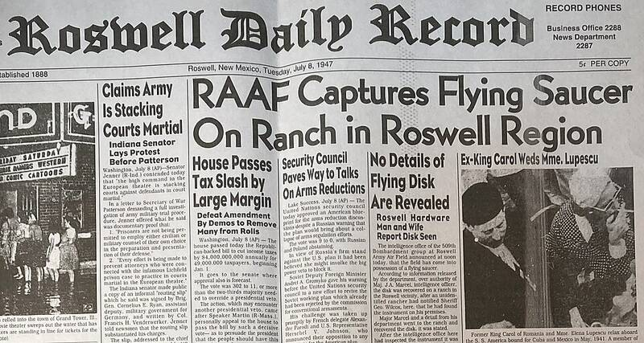

Roswell
New Mexico, 1947

Army Air Field officers announced a recovered flying disc in July 1947, then called it a weather balloon. The Air Force later identified it as Project Mogul, a classified balloon array. It remains the most famous UFO case. 1,2
Open in the interactive Watcher
Related
- Film shows the autopsy of an alien from the Roswell crash Claim
- Roswell technology was secretly fed to U.S. industry Claim
- A flying saucer crashed near Roswell in 1947 Claim
- Stanton Friedman Person
- Kevin Randle Person
- Donald Schmitt Person
- Jesse Marcel Person
- Walter Haut Person
- Edgar Mitchell Person
- Linda Moulton Howe Person
- Nick Redfern Person
- Greys Person
- Charles Berlitz Person
- Philip J. Corso Person
Sources
- Roswell incident Wikipedia
- Results of a Search for Records Concerning the 1947 Crash Near Roswell, New Mexico U.S. General Accounting Office, July 1995